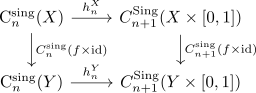
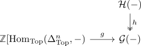
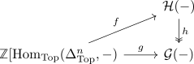
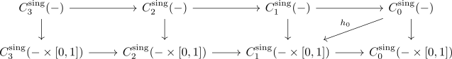
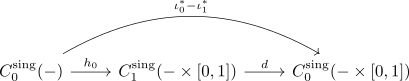

singular chain complex functor and homotopy for the interval
Proposition
Let $X$ be a topological space $X \times [0,1]$ the product and
be the inclusion.
Then for the relative singular chain complex functor
are naturally chain homotopic, i.e. there exists a chain homotopy
such that for any continuous map
and all $n \in \mathbb{Z}$ the diagram

Proof
projective object
using large cardinal axiom it follows, that for sufficient large grothendieck unvierse $U,V$ the functor category
is an $V$-small abelian category.
Then
with
is an object of
where each $\mathcal{F}_n$ is a projective object:
Suppose there exist functors $\mathcal{G}, \mathcal{H}$ with

where $h \in \mathrm{Mor}(\mathrm{Fun}(\mathrm{Top}, \mathrm{Mod}(\mathbb{Z}))$ is an epimorphism. Then $h(X)$ is an epi for $X \in \mathrm{Ob}(\mathrm{Top})$ (cf. natural transformation and morphisms as epimorphism, Category RMod as bicomplete category)
By definition of a free abelian group as left adjoint, we conclude, that $g$ corresponds naturally to a natural transformation
which in turn corresponds by Yoneda by natural transformations from Hom-Sets to a presheaf to an element
By similar reasoning, a natural transformation

corresponds analogously to an element $\widehat{h} \in \mathrm{Set}(\mathcal{H}(-))$.
Then the diagram commutes if and only if
Since $h$ is objectwise an epimorphism these exists (cf. epimorphism in Ab as surjection)
Therefore $\mathrm{C}_{*}^{\mathrm{sing}}(-)$ is a chain complex of projectives
proof
Consider

where
resp. the map corresponding to $\mathrm{Yon}(\Delta^1 \rightarrow [0,1])$
Thus the composite is

Then $h_0$ can be extended to a natural chain homotopy between $\mathrm{C}_*^{\mathrm{sing}}(\iota_0), \mathrm{C}_*^{\mathrm{sing}}(\iota_1)$ This requires, that for $n > 0$ certain maps
vanish.
By yoneda, such maps are given characterized by elements in
which is the trivial group, as $\Delta_{\mathrm{top}}^n \times [0,1]$ is contractible